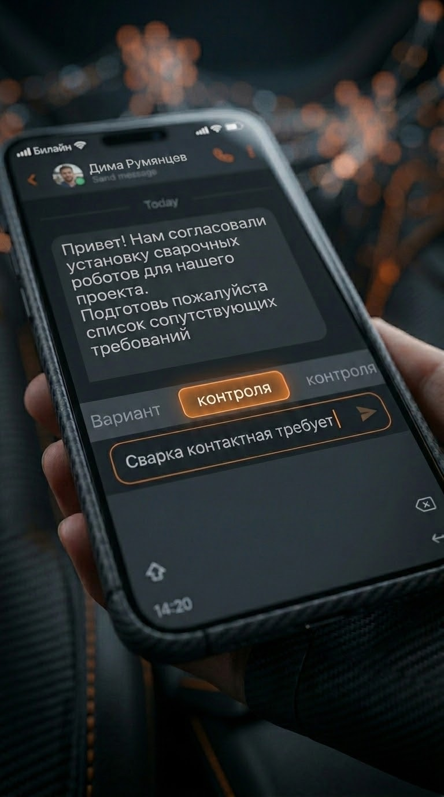

5 / 27
←
▶
→

Что такое LLM: большая языковая модель без магии
Статистическая модель, обученная на триллионах токенов
Книги, статьи, техническая документация, код, патенты — триллионы токенов для обучения
Предсказывает наиболее вероятное продолжение текста
Как автодополнение в смартфоне, но на уровне абзацев и логики рассуждений
Не «понимает», а находит паттерны
Не знает физику процесса — только статистические совпадения слов в обучающих данных
Качество ответа на 80% зависит от промпта
Промпт = техническое задание для ИИ. Чем конкретнее задача — тем точнее результат
Может ошибаться (галлюцинации) — всегда проверяйте
Уверенно выдумывает несуществующие ГОСТы или параметры. Инженер — источник истины